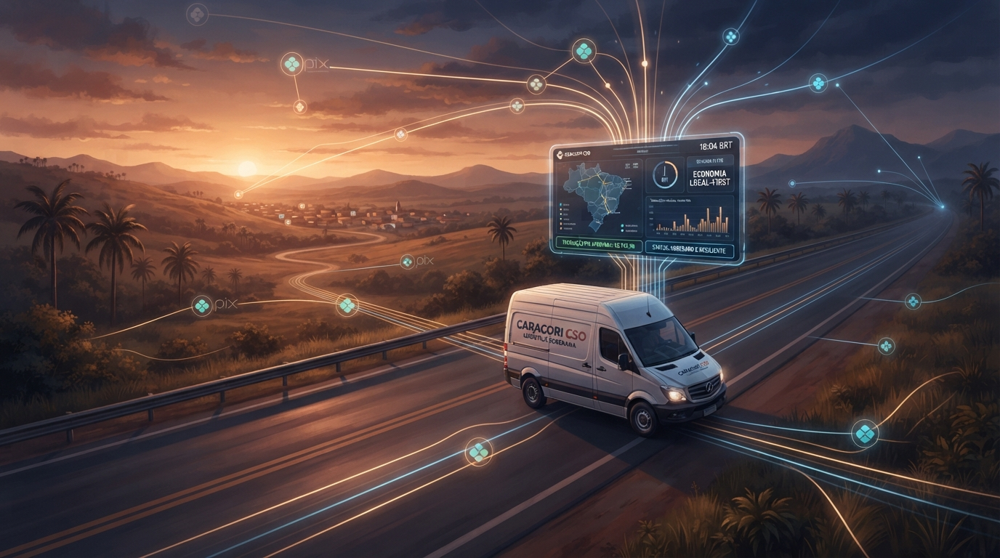

Trilogia CaraCore CSO — Parte 3 de 3 (final)
FinOps B2B, Monetização por Pix e o Futuro Local-First: A Economia Real do CaraCore CSO

A Rota da Soberania: A união entre a eficiência financeira do Pix, planos sob medida para PMEs e a arquitetura resiliente Local-First.
Tempo de leitura: 7 minutos
Existe uma ilusão muito perigosa propagada pelo ecossistema de startups de tecnologia: a de que um software de assinatura (SaaS) precisa obrigatoriamente levantar milhões de investimento de risco, queimar caixas astronômicos em anúncios do Google e cobrar centenas de reais por mês do cliente para ser viável.
Quando olhamos para a realidade do Brasil profundo — as pequenas frotas de entrega urbana, as vans de logística de bairro e as empresas familiares de transporte —, a matemática é outra. Para o empresário que luta com o preço do diesel e os custos de manutenção, cada real conta. Se a mensalidade do software de frota pesar mais do que a troca de óleo de um dos veículos, ele simplesmente não contrata.
Neste terceiro ensaio, abrimos os bastidores financeiros do CaraCore CSO: como estruturamos planos de R$ 0 a R$ 49/mês que geram margem líquida positiva desde o primeiro dia, como o Pix direto revolucionou nossa liquidação e por que o futuro do software de missão crítica pertence ao modelo Local-First (Bunker Digital).
1. A Matemática dos Planos Sóbrios: De R$ 0 a R$ 49/mês
No CaraCore CSO (cso.caracore.com.br), adotamos uma tabela de preços hiperacessível e transparente:
- Plano FREE_3 (R$ 0/mês): Cadastro self-service para até 3 veículos com todas as funcionalidades essenciais (veículos, abastecimentos, manutenções e relatórios básicos). É a nossa porta de entrada e validação imediata de valor.
- Plano P5 (R$ 5,00/mês): Até 5 veículos — perfeito para microempresas de entrega.
- Plano P10 (R$ 10,00/mês): Até 10 veículos — o plano mais popular para operações regionais.
- Plano CORPORATE (R$ 49,00/mês): Até 50 veículos com relatórios consolidados e suporte dedicado.
Por que conseguimos cobrar R$ 10,00 por mês por 10 veículos enquanto outros cobram R$ 250,00? Porque nossa arquitetura com Quarkus 3 e PostgreSQL gerenciado consome uma fração de recursos de nuvem, mantendo o custo de infraestrutura por cliente na casa dos centavos.
2. Liquidação Direta via Pix: Adeus Intermediários Predatórios
Muitos serviços digitais perdem de 5% a 10% da sua receita bruta com taxas de intermediação de gateways de cartão de crédito internacionais, além de enfrentarem chargebacks e retenções indevidas. No CaraCore CSO, adotamos o Pix Direto com Confirmação e Ativação Operacional:
- O gestor acessa a tela de checkout (`/pagamento/checkout`) e escolhe o plano.
- O sistema gera o QR Code e o código Pix Copia-e-Cola com o valor exato.
- A ativação é confirmada pelo operador na central `/cso-ops/assinaturas`, liberando o limite de veículos em tempo real e emitindo o recibo com rastreabilidade fiscal.
package br.com.caracore.cso.modules.auth.service;
import br.com.caracore.cso.modules.auth.model.Plano;
import br.com.caracore.cso.modules.auth.model.Assinatura;
import jakarta.enterprise.context.ApplicationScoped;
import jakarta.transaction.Transactional;
import java.time.LocalDateTime;
@ApplicationScoped
public class AssinaturaService {
@Transactional
public void liberarAssinaturaPix(Long assinaturaId, String comprovanteTransacao) {
Assinatura assinatura = Assinatura.findById(assinaturaId);
if (assinatura == null) {
throw new IllegalArgumentException("Assinatura não encontrada.");
}
// Atualização do ciclo de faturamento e ativação do plano no tenant
assinatura.status = StatusAssinatura.ATIVA;
assinatura.dataInicio = LocalDateTime.now();
assinatura.dataExpiracao = LocalDateTime.now().plusMonths(1);
assinatura.identificadorTransacao = comprovanteTransacao;
assinatura.persist();
// Atualiza a capacidade de veículos do tenant
assinatura.tenant.plano = assinatura.plano;
assinatura.tenant.limiteVeiculos = assinatura.plano.getLimiteVeiculos();
assinatura.tenant.persist();
}
}3. Por que o Marketing Técnico Vence os Anúncios Pagos
Conforme amadurecemos a estratégia da Cara Core, ficou claro que queimar caixa no Google Ads para disputar palavras-chave genéricas de "gestão de frota" com gigantes multinacionais é uma armadilha matemática. O Custo de Aquisição de Cliente (CAC) explode antes do primeiro retorno financeiro.
O melhor motor de atração B2B é a autoridade técnica e a verdade de engenharia. Quando o arquiteto do software escreve sobre os gargalos reais do diesel, as sutilezas da Reforma Tributária brasileira e a robustez do código, quem lê é o tomador de decisão qualificado — o empresário que busca alguém que realmente entende a dor dele, e não um anúncio frio de marketing.
4. O Futuro: A Ponte para o Bunker Digital (Local-First)
Embora a versão web do CaraCore CSO esteja operando em alta disponibilidade na nuvem (cso.caracore.com.br), nosso compromisso filosófico com a soberania de dados do cliente aponta para o próximo grande marco:
- PWA Local-First com SQLite/OPFS: Permitir que motoristas e encarregados operem 100% desconectados no pátio, sincronizando os dados de forma atômica assim que o sinal de rede for restabelecido.
- CSO Transportes Desktop (Previsão 2028): Uma aplicação bunker desktop independente, rodando em Java com SQLite local, onde o cliente é o proprietário soberano absoluto dos seus dados, imune a quedas de provedores de nuvem globais.
Conclusão da Trilogia: O Software que Respeita o Negócio
Construir o CaraCore CSO tem sido uma jornada de respeito à engenharia de software e ao bolso de quem produz. Demonstramos que com Quarkus, HTMX, PostgreSQL e disciplina financeira é perfeitamente possível criar produtos modernos, altamente rentáveis e prontos para atender a economia real.
Dicionário de Termos Técnicos
Glossário de conceitos de FinOps e arquitetura abordados:
- Bunker Digital (Local-First)
- Filosofia de engenharia de software que prioriza a execução e a persistência de dados localmente no dispositivo do cliente, garantindo que o sistema nunca pare de funcionar mesmo sem conexão com a internet.
- CAC (Custo de Aquisição de Cliente)
- Métrica que calcula a soma de todos os investimentos em marketing e vendas dividida pelo número de novos clientes conquistados no período.
- LTV (Lifetime Value)
- A receita total estimada que um cliente traz para a empresa ao longo de todo o período em que permanece utilizando o serviço.
- OPFS (Origin Private File System)
- Recurso moderno dos navegadores web que fornece um sistema de arquivos privado e de alto desempenho, permitindo rodar bancos de dados completos (como SQLite) diretamente no cliente.
- Pix Copia-e-Cola
- Sequência alfanumérica padronizada pelo Banco Central do Brasil que contém todas as informações da transação de pagamento instantâneo para processamento manual ou automatizado.
- PWA (Progressive Web App)
- Aplicação web construída com tecnologias modernas que pode ser instalada no dispositivo do usuário e oferece recursos semelhantes a apps nativos, incluindo cache offline e sincronização em segundo plano.